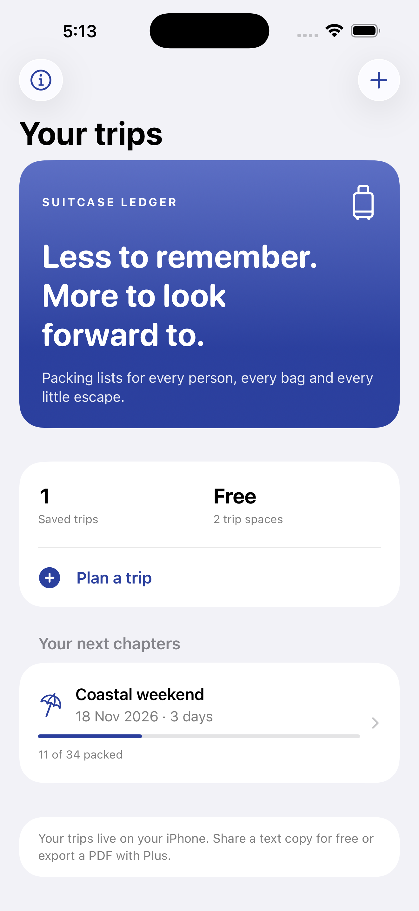

For freelancers & small studios
Scope Tally
Turn “one more thing” into a clear proposal. Keep approved extras visible until you invoice them.
Two active projects and PDF proposals, free.

Independent apps for iPhone
Keep client extras organised. Get everyone’s packing into one list. Practical apps that start free, with an optional one-time upgrade.
No subscriptions · No ads · No accountTurn “one more thing” into a clear proposal. Keep approved extras visible until you invoice them.
Two active projects and PDF proposals, free.
One trip. Everyone’s essentials. Make a packing list for each traveller and see what’s still missing.
Two saved trips and all six templates, free.

Both apps work offline for everyday use. Your projects and trips stay on your iPhone. Purchases and restores use Apple and need an internet connection.
Useful before you even download
A simple request template: added work, fee, timing, response and invoice reference.
Use the free template →A printable starting list with shared items and a section for each traveller.
Get the weekend checklist →Next up · Awaiting App Store review
Plan straight-stock cuts for timber and pipe, including blade kerf and end trim. Free: two saved projects, up to 500 pieces and text sharing. Optional Plus: unlimited projects and PDF export.
Not available to download yet. For one material and cross-section per project. The best-fit planner does not guarantee the fewest boards. Verify dimensions and equipment setup before cutting.
For Scope Tally, see its getting-started and purchase help and privacy policy. The help below covers Offcut Ledger and Suitcase Ledger.
Open a support request with the app name, iOS version and what happened. GitHub issues are public: do not include passwords, receipts, booking details, addresses or other private information.
Restore Plus: Open About → Explore Plus → Restore Purchases using the Apple Account used for the original purchase. An internet connection is needed for purchases and restores. Your saved lists remain available if the upgrade cannot be verified.
Save a copy: Use Share text plan/checklist, or PDF export with Plus. Data is stored locally; deleting the app can delete its data. Apple device backups depend on your settings.
Purchases: Apple handles billing and refund requests. Apple billing support.
Effective 11 November 2026
This policy covers Offcut Ledger and Suitcase Ledger, published by James Kershaw.
Data in the apps: Project dimensions, names, trip dates, packing items and completion states stay in the app's local storage. We do not operate user accounts, a cloud database, advertising, analytics, location tracking or third-party tracking SDKs. We do not receive your projects or trips.
Purchases: StoreKit communicates with Apple to display products, process payments and verify entitlements. Apple processes payment and account information under its own privacy policy; the apps do not receive card details. Entitlements are read from Apple's verified transactions.
Sharing and backups: Exported content is shared only when you choose a destination in the iOS share sheet. Your chosen service's privacy policy applies. iOS may back up local app data according to your device settings.
Support and this website: This site is hosted by GitHub Pages. GitHub may process connection information under its privacy statement. We add no analytics or cookies. If you submit a public GitHub issue, its content is visible to others. Use no sensitive information.
Deleting data: Delete a project or trip in the app, or uninstall the app to remove its local data. Manage any device backups separately in Apple's settings. Contact us via the support link above for policy questions.
The apps are free to download. Plus is a non-consumable, one-time in-app purchase for each app separately; there is no recurring charge. Apple displays the localized price before confirmation. Restore Purchases recovers an eligible purchase on the same Apple Account. Apple's standard EULA applies.